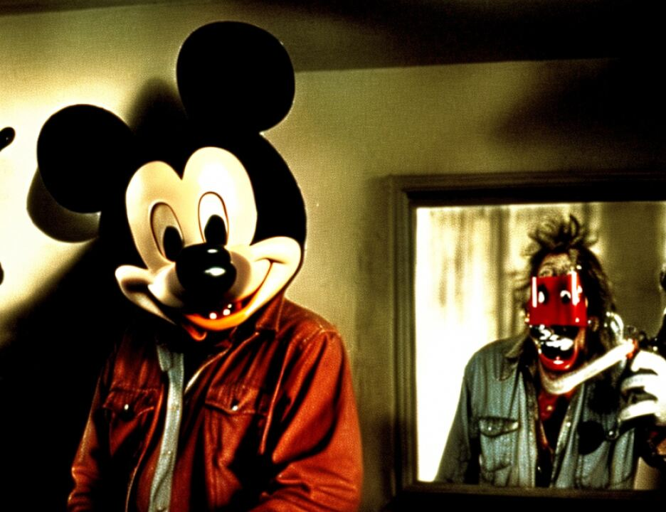

8 (Government's Exhibit 2012D received in evidence)
9 Q Ma'am, can you tell us what that picture is?
10 (Pause)
11 A That picture was taken at Tallahassee airport when my son
12 came off the airplane after being stationed in Japan for a
13 year. I can remember the plane hadn't even landed, I could
14 see it coming and I was already in tears, because I just
15 wanted to hold my son in my arms, and we hugged for the
16 longest time. We hug a lot in my family. We were very
17 emotional with one another. We showed affection all the time.
18 Nathan was not ashamed to kiss me in front of anyone. And
19 hug. We always hugged, always.
20 MR. FITZGERALD: I'd next like to show, your Honor,
21 Government Exhibit 2012E, another photograph.
22 (Government's Exhibit 2012E received in evidence)
23 Q Did Nathan smile a lot?
24 A I'm sorry, I didn't hear you.
25 Q Did Nathan smile a lot?
6886
1 A Practically all the time. The same day he came home from
2 Japan and when he walked in the house he threw his arms up and
3 he goes: I'm finally home.
4 Q Did there come a time when Nathan told you he joined the
5 Marines security guard detachment?
6 A Yes.
7 Q Can you tell the jury about that?
8 A It was in Pendelton at the time. He decided that he was
9 going to join the MSG program. I was a little apprehensive.
10 I didn't quite understand what it was, and then I questioned
11 him. I said: Is that like being the equivalent of a
12 policeman? And he laughed at his mother and he said: No, no,
13 no. He says: You know the little guys that stand in front of
14 the embassy.
15 And he heard my silence, and he knew, because his
16 response was, Mom, just be happy for me. But my heart had
17 sunk because I knew that embassy duty could be dangerous. And
18 I told him: I said: Nathan, I said, I'm happy for you. I
19 know you know you want to do this. And of course I've always
20 backed my children 100 percent. As long as anything they ever
21 did was above board. I was always there for them. It was his
22 life, and that's what he wanted to do. I could not work for
23 him to make him happy. He had to be happy in his career.
2